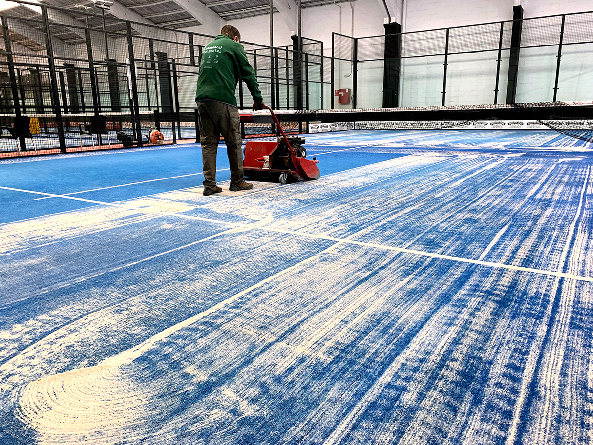

Las Canchas
¿Cuánto mide una pista de padel?
Una pista de pádel debe medir 10m de ancho por 20m de largo. Ambas mitades de pista deben ser simétricamente perfectas en cuanto a medidas y también al trazado de las líneas. El grosor de las líneas es de 5cm y casi siempre blancas para que se vean perfectamente en el terreno de juego.
Entre la pared y la línea de saque, hay un espacio de tres metros, y desde la línea de saque hasta la red hay siete metros. El área entre la red y las líneas de servicio está partida por una línea perpendicular, que se llama línea central de saque y divide esta área en dos zonas iguales. Esta línea central se alarga aproximadamente 20 centímetros más que la de servicio. Las pistas están cerradas por cuatro paredes con una altura mínima de 3 metros cada una.
La pared del fondo debe ser de al menos cuatro metros de altura, que puede ser de cualquier material transparente u opaco (cristal, cemento, etc.). Además, el reglamento permite que los tres primeros metros sean de cualquiera de los materiales mencionados anteriormente y, el último, sea una valla metálica. La red de pádel ostenta una longitud de 10 metros y una altura de 0.88 metros en el centro, elevándose en los extremos hasta los 0.92 metros. Se encuentra suspendida por un cable cuyos extremos están unidos a dos postes laterales de una altura máxima de 1.05 metros.

¿Cómo debe ser el suelo? ¿Qué materiales… y de qué color?
Para el suelo de una pista de pádel se puede usar tres materiales: césped sintético, cemento o moqueta. Lo ideal sería el césped, que con su arena correspondiente facilita los movimientos de los jugadores. En cuanto a colores, el reglamento permite utilizar tres: verde, azul o pardo-terroso. El color del suelo negro es solamente para instalaciones indoor.
Accesos a la pista
Los accesos a la pista pueden estar en ambos lados, a la altura de la red, o bien en un solo lado de la pista. Las medidas de las aberturas deben ser:
- Con un solo acceso: el hueco libre ha de tener un mínimo de 1,05 x 2,00 m.
- Con dos accesos: cada hueco libre ha de tener un mínimo de 0,72 x 2,00 m.
Finalmente, la iluminación. Todas las pistas de pádel tienen que contar con cuatro focos, situados en el exterior de la pista, Tendrán una altura mínima de seis metros.